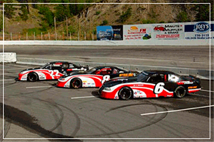
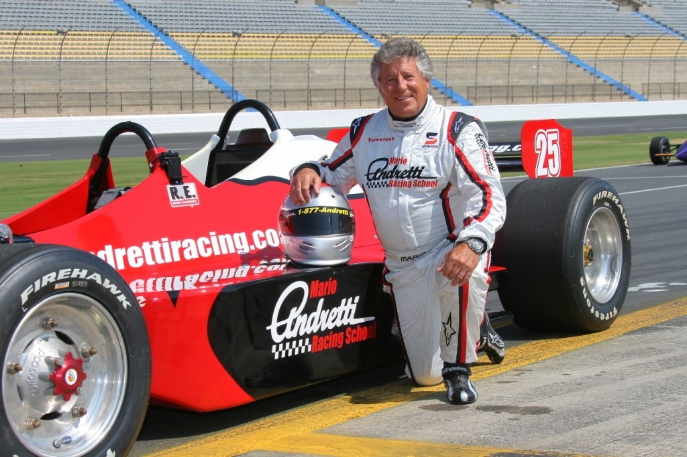

Four Circles Racing Events
Four Circles Racing EventsAbout Us
Who We Are
Four Circles Racing Events, has created a very successful and unique corporate event environment for relationship and team building, for many multinational companies over the last 35 years. We have created Corporate Incentive Events for companies such as IBM, Hewlett Packard, Microsoft, Nike, Texaco, Pepsi, Toyota Lexus, plus many more. These companies compliment our services by returning every year, or even several times a year! Our programs are much different than the others, as they are specifically and individually designed to help you meet your corporate meeting or entertainment goals. Our supercar experience, our personalized service, and flexible on-track programs, foster camaraderie and relationship building that creates a memory that draws together future conversations. Allow us to show you how easy and successful your corporate event can be. Call today and ask for David. Our Fortune 500 clients can't be wrong!
Joest Wolfgang
Joest Wolfgang is the founder and CEO of Four Circles Racing Events. Joest has a long-time passion for going fast and wanted to bring that passion to the fast-paced world of corporate America. Beginning with a few used stock cars in the early 1980's, Joest and his team have grown FCRE to be the number one racing experience company in the country. Come find out how Joest's dream can be your reality.